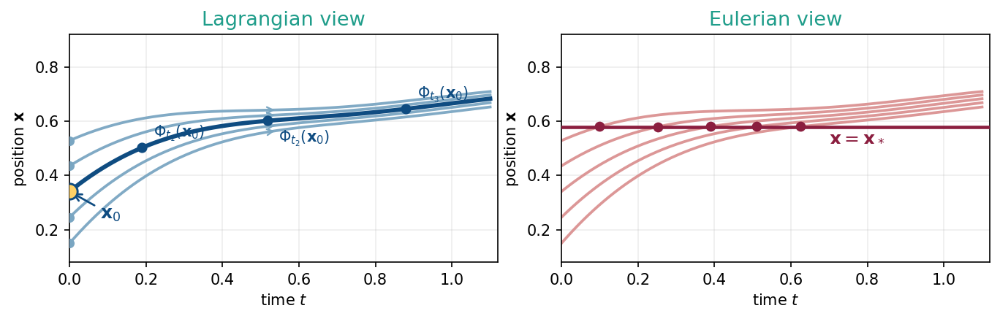
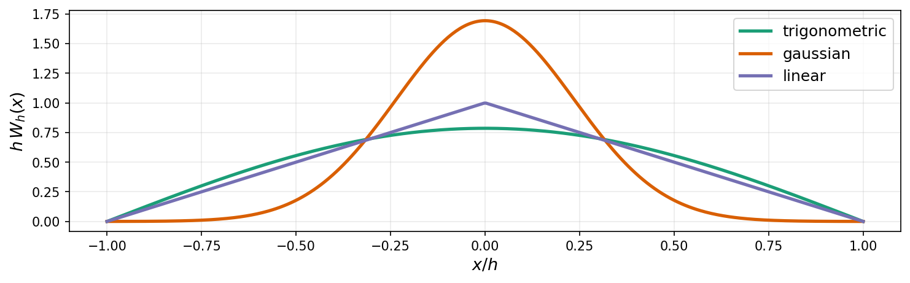
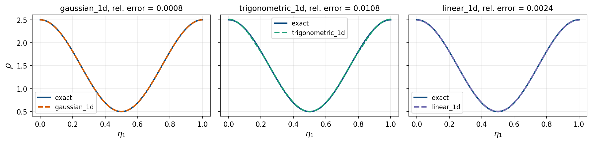
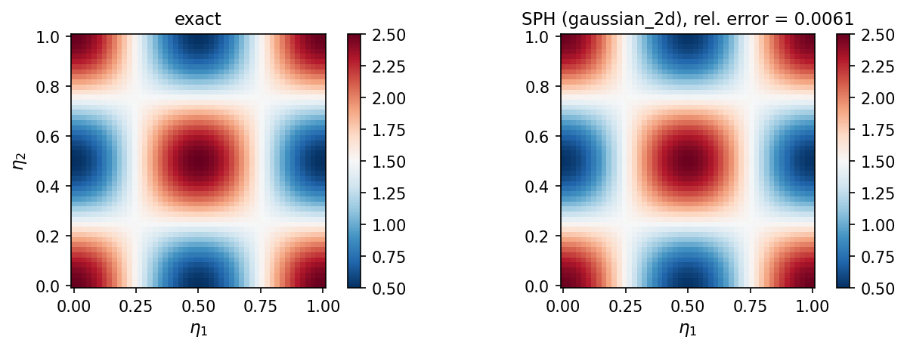
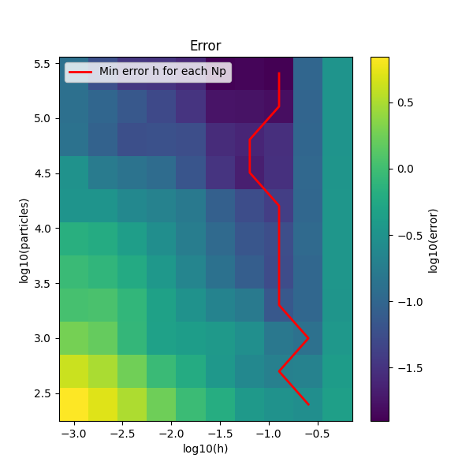

Smoothed particle hydrodynamics (SPH)#
This page introduces smoothed particle hydrodynamics (SPH) as it is used in Struphy. SPH is a meshless method for fluids: the fluid is represented by particles (markers) that move with the flow, and the fluid equations are derived from a variational principle for the particles. The first sections explain the idea and the algorithm; the derivations follow in Lagrangian and Eulerian descriptions and the sections after it. SPH shares the marker representation of densities with the Particle-in-cell methods (PIC), which is assumed known here. Parts of the material and the figures are adapted from the lecture Meshless Structure-Preserving Algorithms (SPEGEO school, Strasbourg 2026).
Overview#
We consider a compressible fluid with mass density \(\rho(t, \mathbf x)\) and velocity \(\mathbf u(t, \mathbf x)\), \(\mathbf x \in \Omega \subset \mathbb R^3\), governed by the Euler equations
with a pressure \(p(\rho)\), an external potential \(V\) (e.g. gravity) and, for viscous fluids, a viscous stress \(\boldsymbol \sigma\).
The idea. The density is represented by \(N\) markers that move with the fluid. Marker \(p\) has a position \(\mathbf x_p(t)\), a velocity \(\mathbf v_p(t) = \dot{\mathbf x}_p(t) = \mathbf u(t, \mathbf x_p(t))\) and a constant weight \(w_p\), the mass it carries:
Mass conservation, the first equation of (1), then holds exactly: the markers are transported by the flow and keep their weights (see Marker equations of motion). What remains is the momentum equation, which becomes an equation of motion for each marker. The pressure force needs the density at the markers, which the delta distributions (2) do not provide. SPH replaces it by the smoothed density
a kernel density estimate with a smoothing kernel \(W_h\) of width \(h\). Inserting (2) and (3) into the action principle of the fluid yields the SPH equations of motion (Discrete Lagrangian and pressure force):
The pressure force is a sum over pairs of markers. Because \(W_h\) vanishes outside a box of half-width \(h\), only neighbouring markers interact, and the cost is \(O(N)\) with a box-based neighbour search (Neighbour search and parallelization).
SPH is popular because
it needs no mesh: free surfaces, large deformations and mixing are handled naturally (see the dam break below);
mass is conserved exactly, and the pressure force derived from a Lagrangian conserves momentum and energy (Conservation properties);
it is Lagrangian: there is no numerical diffusion from advection.
Its weaknesses are the smoothing error (bias) of order \(h^2\), the sampling noise for too few markers per kernel, the treatment of boundaries by ghost particles (Boundary conditions), and instabilities of regular marker arrangements (e.g. the “zig-zag” pattern of tessellated markers in shear flow).
SPH algorithm in Struphy#
A Struphy SPH simulation consists of the following steps:
Loading. Place the markers in the unit cube of logical coordinates \(\boldsymbol \eta \in (0, 1)^3\), either on a regular grid in each sorting box (
loading="tesselation", withppbmarkers per box) or at random ("pseudo_random","sobol_*"), see Marker loading in Struphy. Options:LoadingParameters, class:ParticlesSPH.Weights and velocities. The weights are the masses of the markers, \(w_p = \int_{\Omega_0^p} \rho_\textnormal{in}\, \textrm d \mathbf x\) for tessellation (integrals over the tiles) or \(w_p = \rho_\textnormal{in}/(N s)\) for random loading, see Two ways to define markers and weights; then \(\sum_p w_p\) is the total mass (exactly up to quadrature for tessellation, approximately for random loading). The velocities are set to the initial fluid velocity, \(\mathbf v_p(0) = \mathbf u_\textnormal{in}(\mathbf x_p(0))\). The initial condition is a fluid background (e.g.
ConstantVelocity) with perturbations of the density or velocity.Time stepping. The propagators of the model (SPH models in Struphy) are applied by operator splitting. In each time step they
move the markers, \(\dot{\boldsymbol\eta}_p = DF^{-1} \mathbf v_p\) (
PushEta);sort the markers into boxes and fill the ghost boxes at boundaries and MPI interfaces (Neighbour search and parallelization, Boundary conditions);
compute the smoothed densities \(\rho_p\) and other coefficients at the markers;
update the velocities by the pressure force, the viscous force and external forces.
Diagnostics. The kinetic energy is saved as a scalar; densities on grids are obtained by kernel density estimation (
KernelDensityPlot) or Particle binning.
Seven tutorials show SPH simulations in Struphy, from a pressureless fluid in a force field to the dam break:
The evaluation of SPH densities is shown in the developer tutorial SPH evaluation kernels.
Notation used on this page:
Symbol |
Meaning |
|---|---|
\(\mathbf x\), \(\boldsymbol\eta\) |
physical and logical coordinates, \(\mathbf x = F(\boldsymbol\eta)\), \(\sqrt g = |\det DF|\) |
\(\rho\), \(\mathbf u\) |
mass density (a volume form) and fluid velocity |
\(p\), \(i\), \(j\), \(q\), \(N\) |
marker indices, number of markers (\(p\) is also the pressure \(p(\rho)\); the meaning is clear from the context) |
\(\mathbf x_p\), \(\mathbf v_p\), \(w_p\) |
marker position, velocity and weight (mass) |
\(W_h\), \(h\) |
smoothing kernel and its width (support radius) |
\(\rho_p\) |
smoothed density at marker \(p\), equation (3) |
\(\mathcal U(\rho)\) |
internal energy per unit mass, with pressure \(p = \rho^2\, \partial_\rho \mathcal U\) |
\(\Phi_t\) |
flow map of the fluid, \(\Phi_t(\mathbf x_{p0}) = \mathbf x_p(t)\) |
Lagrangian and Eulerian descriptions#
Fluid motion can be described in two ways (figure):
Lagrangian (follow the fluid parcels): each parcel is labelled by its initial position \(\mathbf x_0\), and the unknown is the flow map \(\Phi_t\), where \(\Phi_t(\mathbf x_0)\) is the position at time \(t\) of the parcel that started at \(\mathbf x_0\). For each \(\mathbf x_0\) one solves an ODE,
\[\frac{\textrm d}{\textrm d t} \Phi_t(\mathbf x_0) = \mathbf u\big(t, \Phi_t(\mathbf x_0)\big)\,, \qquad \frac{\textrm d^2}{\textrm d t^2} \Phi_t(\mathbf x_0) = \frac 1m \mathbf F\big(t, \Phi_t(\mathbf x_0)\big)\,, \qquad \Phi_0(\mathbf x_0) = \mathbf x_0\,,\]where \(\mathbf F\) is the force on a parcel.
Eulerian (observe at fixed points): the unknowns are the fields \(\rho(t, \mathbf x)\) and \(\mathbf u(t, \mathbf x)\), solutions of the PDEs (1).
The two are linked by \(\mathbf u(t, \mathbf x) = \dot\Phi_t \circ \Phi_t^{-1}(\mathbf x)\): the acceleration of a parcel is the material derivative, \(\frac{\textrm d}{\textrm d t} \mathbf u(t, \Phi_t(\mathbf x_0)) = (\partial_t + \mathbf u \cdot \nabla) \mathbf u\). Particle methods discretize the Lagrangian description: the markers are the parcels.


Lagrangian view: follow the parcel that starts at \(\mathbf x_0\) along its trajectory \(\Phi_t(\mathbf x_0)\). Eulerian view: observe the parcels that pass a fixed point \(\mathbf x_*\).#
Conservation of mass. The mass density \(\rho\) is a volume form transported by the flow: the mass in every moving region is constant, \(\int_{\Phi_t(\Omega_0)} \rho(t, \mathbf x)\, \textrm d \mathbf x = \int_{\Omega_0} \rho(0, \mathbf x_0)\, \textrm d \mathbf x_0\) for all \(\Omega_0\) (see Phase space, 0-forms and volume forms and the flow-map figure). This is equivalent to each of
Variational principle for fluids#
The equations of motion of SPH are derived from the action principle of the fluid. We recall it first in the continuous setting.
Action of a single particle. A particle of mass \(m\) in a potential \(V\) follows the trajectory that makes the action stationary,
Lagrangian action of a fluid. For a fluid with initial mass density \(\rho(0, \mathbf x_0)\) and internal energy per unit mass \(\mathcal U(\rho)\), the action is the sum of the parcel actions, weighted by their masses:
Eulerian action. The change of variables \(\mathbf x = \Phi_t(\mathbf x_0)\), with \(\dot \Phi_t(\mathbf x_0) = \mathbf u(t, \Phi_t(\mathbf x_0))\) and the transport of the density (5), replaces the unknown flow map by the two fields \(\mathbf u\) and \(\rho\):
The variations of \(\mathbf u\) and \(\rho\) are not free: they are induced by variations of the flow map, \(\boldsymbol\xi := \delta \Phi_t \circ \Phi_t^{-1}\), which gives (Euler-Poincaré reduction)
Inserting these constrained variations into \(\delta \mathcal A_\textnormal{Euler} = 0\), integrating by parts and requiring the result to vanish for all \(\boldsymbol \xi\) gives the momentum equation
which together with mass conservation (5) is equivalent to (1) without viscosity. The pressure enters through the internal energy: the variation of \(-\int \rho\, \mathcal U(\rho)\, \textrm d \mathbf x\) is \(-\int (\mathcal U + \rho\, \mathcal U')\, \delta\rho\, \textrm d \mathbf x = -\int \rho\, \nabla(\mathcal U + \rho\, \mathcal U') \cdot \boldsymbol\xi\, \textrm d \mathbf x = -\int \nabla p \cdot \boldsymbol\xi\, \textrm d \mathbf x\), since \(\rho\, \nabla(\mathcal U + \rho\, \mathcal U') = (2 \rho\, \mathcal U' + \rho^2\, \mathcal U'')\, \nabla \rho = \nabla(\rho^2\, \mathcal U')\).
Smoothing kernels#
A smoothing kernel \(W_h\) is a non-negative, even function with \(\int W_h\, \textrm d \mathbf x = 1\) that vanishes outside a neighbourhood of size \(h\) of the origin (a box of half-widths \(h_i\) for the tensor-product kernels of Struphy) and tends to the delta distribution as \(h \to 0\). Then
where the last step is the marker approximation of the integral with the volume \(w_j/\rho_j\) of marker \(j\). For \(A = \rho\) this gives the smoothed density (3); for \(A = \mathbf u\) the smoothed velocity
and derivatives are obtained by differentiating the kernel, \(\nabla \mathbf u_h(\mathbf x) = \sum_j \frac{w_j}{\rho_j} \nabla W_h(\mathbf x - \mathbf x_j) \otimes \mathbf v_j\).
Struphy provides three kernel shapes in struphy.pic.sph_smoothing_kernels
(figure). In one dimension, with support \(|x| \leq h\),
The Gaussian has standard deviation \(h/(3\sqrt 2)\) and is cut off at \(|x| = h\). Kernels in 2D and 3D
("*_2d", "*_3d") are tensor products of these, with a width \(h_i\) per direction; "linear_isotropic_3d"
is the radial kernel \(\frac{3}{\pi h^3}(1 - |\mathbf x|/h)\). The kernels and their gradients are evaluated in
logical coordinates \(\boldsymbol \eta\); gradients are mapped to physical space with \(DF^{-\top}\).


The 1D smoothing kernels of Struphy (trigonometric_1d, gaussian_1d, linear_1d), scaled with the
width \(h\).#
Figures below show the smoothed density (3) of tessellated markers (4 per box, \(h\) = box size) for \(\rho(\eta_1) = 1.5 + \cos(2\pi\eta_1)\) and, in 2D, with 16 markers in each of \(12 \times 12\) boxes; all kernels recover the density well.


Smoothed density in 1D with the three kernels (tessellation, 4 markers per box, \(h = 1/24\)), computed
with eval_density().#


Smoothed density in 2D, \(\rho = 1.5 + \cos(2\pi\eta_1)\cos(2\pi\eta_2)\), with the gaussian_2d kernel
(tessellation, 16 markers in each of \(12 \times 12\) boxes, \(h = 1/12\)).#
Convergence. Two errors compete (figure): the smoothing bias grows with \(h\) (the kernel is too wide and smooths out features), and the sampling noise grows when too few markers lie in the support of the kernel (small \(h\) at fixed \(N\)). For each \(N\) there is an optimal \(h\), which decreases as \(N\) grows. Convergence \(\rho_h \to \rho\) requires \(h \to 0\) and \(N \to \infty\) with \(N h^d \to \infty\), i.e. more and more markers per kernel support.


Error of the smoothed density as a function of the kernel width \(h\) and of the number of markers (randomly drawn, logarithmic scales). The red line marks the optimal \(h\) for each number of markers.#
Discrete Lagrangian and pressure force#
Inserting the marker ansatz (2) into the action (6), with \(\mathbf u(t, \mathbf x_p(t)) = \mathbf v_p = \dot{\mathbf x}_p\), reduces the action to a finite-dimensional one for the marker trajectories:
The internal energy \(\mathcal U(\rho(t, \mathbf x_p))\) cannot be evaluated with the delta distributions; it is evaluated with the smoothed density \(\rho_p\) of (3), which depends on the positions of all markers. Without internal energy (pressureless fluid) the markers decouple: the fluid in a given potential reduces to \(N\) copies of Newton’s equation \(\ddot{\mathbf x}_p = -\nabla V(\mathbf x_p)/m\), while a grid-based discretization of the same problem would have to solve the nonlinear PDEs (1).
Euler-Lagrange equations. \(\frac{\textrm d}{\textrm d t} \partial L_N/\partial \dot{\mathbf x}_p = \partial L_N/\partial \mathbf x_p\) gives \(w_p \ddot{\mathbf x}_p = - w_p \nabla V(\mathbf x_p)/m - \partial_{\mathbf x_p} \sum_q w_q\, \mathcal U(\rho_q)\). With \(\nabla W_h(\mathbf 0) = 0\) and the antisymmetry \(\nabla W_h(-\mathbf x) = - \nabla W_h(\mathbf x)\),
hence \(\partial_{\mathbf x_p} \sum_q w_q \mathcal U(\rho_q) = w_p \sum_j w_j \big(\mathcal U'(\rho_p) + \mathcal U'(\rho_j)\big) \nabla W_h(\mathbf x_p - \mathbf x_j)\) with \(\mathcal U' = \partial_\rho \mathcal U\). Dividing by \(w_p\):
This is the standard symmetric SPH pressure force, here derived from a variational principle.
Internal energies in Struphy (option thermodynamics of
PushVinSPHpressure):
Closure |
\(\mathcal U(\rho)\) |
\(p(\rho)\) |
\(\mathcal U'(\rho)\) |
|---|---|---|---|
|
\(\kappa \ln \rho\) |
\(\kappa\, \rho\) |
\(\kappa / \rho\) |
|
\(\kappa\, \rho^{\gamma - 1}/(\gamma - 1)\) |
\(\kappa\, \rho^\gamma\) |
\(\kappa\, \rho^{\gamma - 2}\) |
The constant \(\kappa\) is the option kappa (\(\kappa = 0\) gives a pressureless fluid); the adiabatic
index is fixed to \(\gamma = 5/3\) in the kernels. A constant acceleration \(\mathbf g\) (option gravity)
plays the role of \(-\nabla V/m\).
In logical coordinates. Struphy evaluates the kernels in \(\boldsymbol\eta\), with
\(\nabla_{\mathbf x} W_h = DF^{-\top} \nabla_{\boldsymbol\eta} W_h\). With the masses \(w_j\) as weights, the sum
(3) with a kernel normalized in \(\boldsymbol\eta\) approximates the density as a 3-form
in logical space, \(\rho \sqrt g\) (see eval_density()), and this is the
\(\rho_p\) used in the pressure force. For mappings with constant \(\sqrt g\) (e.g.
Cuboid), the factors \(\sqrt g\) cancel for the isothermal closure, and the
polytropic \(\kappa\) is rescaled by \((\sqrt g)^{\gamma - 1}\).
Conservation properties#
The semi-discrete equations (8) inherit the structure of the Lagrangian \(L_N\):
Mass is conserved exactly, since the weights are constant (in Struphy also after the time discretization).
Linear momentum \(\sum_p w_p \mathbf v_p\) is conserved without external force: the pressure force between markers \(p\) and \(j\) is \(- w_p w_j (\mathcal U'_p + \mathcal U'_j) \nabla W_h(\mathbf x_p - \mathbf x_j)\), and the force of \(p\) on \(j\) is its negative (antisymmetry of \(\nabla W_h\)).
Energy \(H_N = \sum_p w_p \big( \frac 12 |\mathbf v_p|^2 + \mathcal U(\rho_p) + V(\mathbf x_p)/m \big)\) is conserved, because \(L_N\) does not depend explicitly on time.
Angular momentum is conserved for radial kernels, for which \(\nabla W_h(\mathbf x_p - \mathbf x_j)\) is parallel to \(\mathbf x_p - \mathbf x_j\). Most kernels of Struphy are tensor products and not radial;
"linear_isotropic_3d"is radial in \(\boldsymbol\eta\), hence in \(\mathbf x\) only for mappings whose Jacobian is a multiple of an orthogonal matrix.
Time discretization. The pressure step keeps the positions fixed, so its right-hand side is constant during the
step and the forward Euler update is exact; the same holds for the position step
(PushEta) in Cartesian coordinates. Splitting these two steps gives the
symplectic Euler method (Lie-Trotter splitting) or the Störmer-Verlet method (Strang splitting): the scheme is
symplectic, conserves linear momentum exactly, and has a bounded energy error. The time step is limited by the
stability of the explicit scheme (a CFL condition with the sound speed \(\sqrt{p'(\rho)}\) and the kernel width),
e.g. \(\Delta t = 10^{-3}\) in the default parameters of EulerSPH.
Viscosity#
The viscous stress of a Newtonian fluid with dynamic viscosity \(\mu \geq 0\) is the traceless symmetric part of the velocity gradient,
The model docstrings of ViscousEulerSPH and IncompressibleNavierStokesSPH use the opposite sign convention (stress tensor \(-\boldsymbol\sigma\)). Viscosity is dissipative and not part of the Lagrangian; it is added to the equations of motion. In SPH, the stress is
evaluated at the markers from the gradient of the smoothed velocity (7),
\(\boldsymbol \sigma_i := \boldsymbol\sigma(\nabla \mathbf u_h(\mathbf x_i))\), and the force is the SPH estimate of
its divergence:
This is implemented in PushVinViscousPotential (in logical
coordinates in Piola form, with forward Euler time stepping). Two remarks:
Boundary conditions#
Near a boundary the support of the kernel extends outside the domain, where there are no markers. Struphy fills this
region with ghost particles: copies of the markers near the boundary, mirrored at the boundary
(\(\eta_i \mapsto -\eta_i\) at \(\eta_i = 0\), \(\eta_i \mapsto 2 - \eta_i\) at \(\eta_i = 1\)).
The ghost particles enter the sums (3), (8) and
(9) but are not pushed. The boundary condition for the SPH sums is set per direction
with bc_sph in BoundaryParameters:
|
Ghost particles |
Effect |
|---|---|---|
|
copies from the opposite side of the domain |
periodic density and velocity |
|
mirrored positions, same weights and velocities |
even density at the wall (zero normal derivative); velocities are not mirrored. Used for walls of pressure-driven flows (dam break), with the markers reflected by |
|
mirrored positions, negative weights \(-f_\textnormal{in}/(N s^0)\) |
odd density, \(\rho \to 0\) at the wall |
|
mirrored positions, negated velocities |
\(\mathbf u = 0\) at the wall (viscous flows) |
The markers themselves are kept in the domain with the marker boundary condition bc ("periodic",
"reflect", "remove", "refill"), e.g. bc=("reflect", "reflect", "periodic") together with
bc_sph=("mirror", "mirror", "periodic") for the dam break, and bc_sph=("periodic", "noslip", "periodic") for
a channel flow.
Neighbour search and parallelization#
The sums over \(j\) in (3) and (8) only include markers within
distance \(h\) of \(\mathbf x_p\). Struphy sorts the markers into a regular grid of sorting boxes in the
logical unit cube (boxes_per_dim in SortingParameters), and the kernel width
in direction \(i\) is at most one box, \(h_i \leq 1/n_i\) (default \(h_i = 1/n_i\)). The neighbours of a
marker are then in its own box and the 26 adjacent boxes (3 x 3 x 3 boxes in 3D), see the
figure on kernel density estimation. Each SPH step
puts the markers into their boxes (
put_particles_in_boxes());fills a layer of ghost boxes around the boxes of each MPI process with copies of the markers of the neighbouring processes, or with the ghost particles of the boundary conditions at the domain boundary;
computes the coefficients (e.g. \(\rho_p\), \(w_p/\rho_p\)) for all markers, and then the forces with a loop over the 27 neighbour boxes of each marker.
The cost is \(O(N \cdot n_\textnormal{nb})\), where \(n_\textnormal{nb}\) is the number of markers in 27 boxes.
With MPI, the boxes are distributed over the processes, so boxes_per_dim must be divisible by the number of
processes in the decomposed direction.
Incompressible flows#
For incompressible flows, \(\nabla \cdot \mathbf u = 0\), the pressure is not a function of the density but a
Lagrange multiplier. IncompressibleNavierStokesSPH computes it with Chorin’s projection
method on the finite element grid (see Geometric finite elements (FEEC)): after the viscous step, the divergence of the marker
velocities is deposited on the grid, the pressure \(p \in H^1\) is found from the Poisson equation
\(\Delta p = \nabla \cdot \mathbf u / \Delta t\) (PoissonSolve), and the
markers are pushed by the pressure gradient
(PushVinForceField), which removes the divergent part of the
velocity.
SPH models in Struphy#
The SPH models form one family; each model adds terms (propagators) to its parent:
Model |
Equations |
Propagators added |
|---|---|---|
pressureless Euler in a force field \(\mathbf F\) and magnetic field \(\mathbf B_0\) |
||
adds pressure \(p(\rho)\) and gravity |
||
adds the viscous stress |
||
incompressible Navier-Stokes (child of |
viscous push, |
The models are verified against analytic solutions in src/struphy/models/tests/verification/:
ColdEulerSPH: oscillation in a harmonic potential (second-order convergence in \(\Delta t\) with Strang splitting, mass conserved to machine precision);EulerSPH: isothermal standing sound wave in 1D over one period;ViscousEulerSPH: damped sound wave (decay rate \(\frac 23 \mu k^2\)), velocity diffusion (decay rate \(\frac 43 \mu k^2\)) and Hagen-Poiseuille flow (parabolic profile between no-slip walls);IncompressibleNavierStokesSPH: Chorin projection and decay of a shear flow between no-slip walls.
The dam break test (ViscousEulerSPH) is a robustness check only: it verifies that the markers stay in the domain.
The Hagen-Poiseuille flow and the dam break are shown with animations in the tutorials (see SPH algorithm in Struphy).